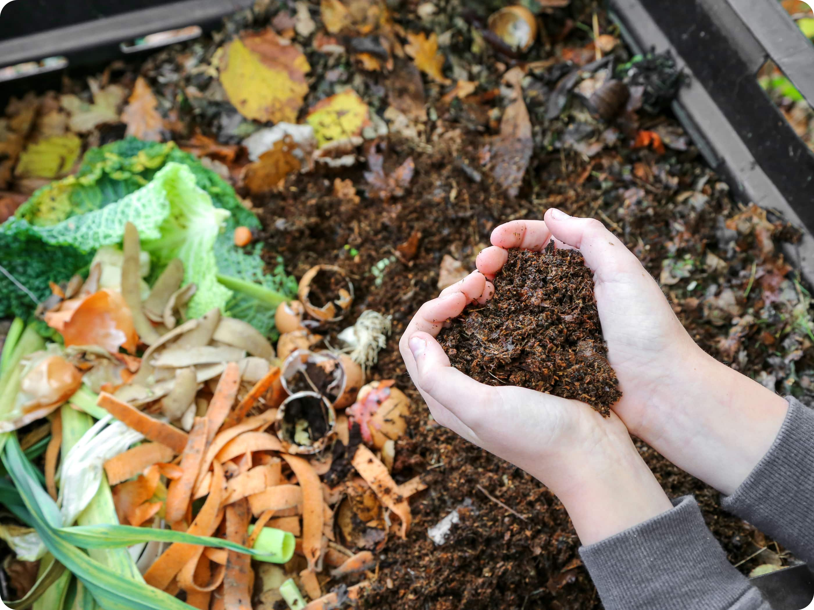

Beneficios del compostaje en casa
El compostaje es una técnica natural para convertir residuos orgánicos en abono rico en nutrientes. Es una forma sencilla de reducir la basura que generamos y devolver a la tierra lo que nos da.
1. Reduce tus residuos
Hasta el 40% de los residuos domésticos son orgánicos. Compostarlos evita que acaben en vertederos o incineradoras.
2. Mejora el suelo
El compost es un fertilizante natural que mejora la estructura y retención de agua del suelo, sin necesidad de químicos.
3. Ahorra dinero
No solo reduces tu volumen de basura (y posibles tasas), sino que obtienes abono gratuito para tus plantas o huerto.
4. Fomenta la educación ambiental
Compostar en casa es una gran oportunidad para enseñar a toda la familia sobre el ciclo de la materia y el respeto por la naturaleza.
Empieza poco a poco, con un cubo de compost en tu cocina o balcón. ¡Tu jardín y el planeta te lo agradecerán!